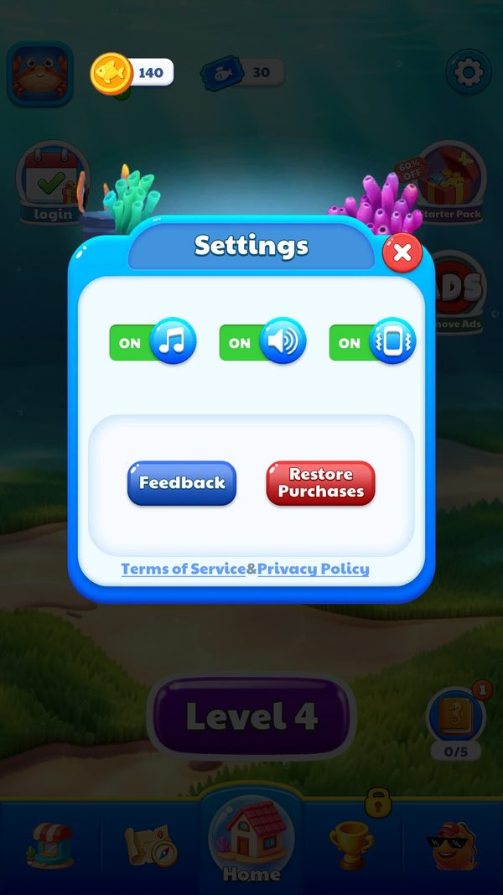

Âm thanh
AudioManager là singleton nạp âm thanh theo đường dẫn từ bundle, thư mục gốc là Assets/AssetRes/Audio.
Mô tả
- AudioManager là singleton nạp âm thanh theo đường dẫn từ bundle, thư mục gốc là Assets/AssetRes/Audio.
- Tên clip đọc được rải rác trong pseudo-C gồm nhạc nền BgMusic_01, hiệu ứng Sound_ding2, Sound_Lock cho việc phá xích, và effect_broken cho hiệu ứng vỡ.
- Một chi tiết thiết kế đáng chú ý là mỗi công trình trong khu trưng bày có một âm thanh riêng, đặt tên theo mẫu Sound_Architecture_<khu>_<công trình>, tức 147 clip riêng biệt chỉ cho phần trang trí.
- Tắt nhạc nền: Nhạc tắt và giữ nguyên sau khi khởi động lại
- Phát âm thanh riêng của công trình: Mỗi công trình có tiếng riêng
- Phát hiệu ứng khi phá xích: Phản hồi nghe thấy và nhìn thấy
Lưu ý
Ảnh chụp màn hình (1)
Chụp trực tiếp từ game đang chạy: 2026-10-06 · LDPlayer 9 · Android 9 · 1080×1920 · máy ảo PHM110 · v1.4111 (cài từ Google Play ngày 12/09/2026) · tài khoản test JadeGill, đang ở level 4. Bấm ảnh để phóng to, dùng phím ← → để chuyển ảnh.


Mở khóa & điểm vào
Luôn hoạt động. Bật tắt nhạc lưu ở khoá MUSIC_KEY.
Điểm vào:
- Tự phát khi vào Home và vào màn
- Công tắc trong UIPanelSetting
Cách hoạt động
- AudioManager có 31 method, nạp clip qua YooAsset theo đường dẫn chuỗi rồi phát.
- Nhạc nền và hiệu ứng tách riêng để công tắc trong cài đặt chỉ ảnh hưởng đúng nhóm.
- Khoá MUSIC_KEY trong PlayerPrefs lưu dạng chuỗi true hoặc false, tài khoản khảo sát đang để false.
- Tham số server BGM_Ctrl bằng 1 cho phép nhạc nền ở mức toàn cục.
Luồng chi tiết theo code
AudioManager có 31 method, nạp clip qua YooAsset theo đường dẫn chuỗi rồi phát. Nhạc nền và hiệu ứng tách riêng để công tắc trong cài đặt chỉ ảnh hưởng đúng nhóm. Khoá MUSIC_KEY trong PlayerPrefs lưu dạng chuỗi true hoặc false, tài khoản khảo sát đang để false. Tham số server BGM_Ctrl bằng 1 cho phép nhạc nền ở mức toàn cục.
Số liệu chính
| Chỉ số | Giá trị | Nguồn |
|---|---|---|
| MUSIC_KEY | false trên tài khoản khảo sát | PlayerPrefs |
| BGM_Ctrl | 1 | SDKManager.getOnlineConfigParams |
| Thư mục âm thanh | Assets/AssetRes/Audio, 5,3 MB | UnityExport/ExportedProject/Assets/AssetRes/Audio |
Use case (3)
Bấm vào từng use case để mở. Mở/đóng tất cả
UC-01 Tắt nhạc nền
Các bước- Ghi MUSIC_KEY thành false
- AudioManager dừng nhạc nền
| Actor | Player |
|---|---|
| Trigger | Gạt công tắc trong cài đặt |
| Điều kiện | Đang ở UIPanelSetting |
| Kết quả | Nhạc tắt và giữ nguyên sau khi khởi động lại |
| Evidence | PlayerPrefs MUSIC_KEY; AudioManager; UIPanelSetting |
UC-02 Phát âm thanh riêng của công trình
Các bước- Đọc trường Sound của công trình
- Nạp clip theo tên
- Phát
| Actor | System |
|---|---|
| Trigger | Mua hoặc chạm một công trình |
| Điều kiện | Đang ở khu trưng bày |
| Kết quả | Mỗi công trình có tiếng riêng |
| Quy tắc / số liệu | 147 công trình tương ứng 147 tên clip theo mẫu Sound_Architecture_<khu>_<công trình> |
| Evidence | ExhibitionArchitectureConfig.Sound |
UC-03 Phát hiệu ứng khi phá xích
Các bước- Phát Sound_Lock
- Chạy spine level_bubble_iron_chain_1
| Actor | System |
|---|---|
| Trigger | Mở khoá bong bóng bị xích |
| Điều kiện | Bong bóng có LockCount |
| Kết quả | Phản hồi nghe thấy và nhìn thấy |
| Evidence | chuỗi Sound_Lock trong BubbleItem |
Cấu hình (4)
Gộp mọi nguồn: const trong code, JSON mặc định trong Resources, bảng static, storage key, AB test, cờ server.
| Nguồn | Key | Kiểu | Giá trị | Ý nghĩa | Nơi định nghĩa |
|---|---|---|---|---|---|
| storage key | MUSIC_KEY | string | false trên tài khoản khảo sát | Bật tắt nhạc | PlayerPrefs |
| server info | BGM_Ctrl | int | 1 | Cho phép nhạc nền ở mức toàn cục | SDKManager.getOnlineConfigParams |
| asset | Thư mục âm thanh | path | Assets/AssetRes/Audio, 5,3 MB | Toàn bộ clip | UnityExport/ExportedProject/Assets/AssetRes/Audio |
| runtime LDPlayer 06/10/2026 | MUSIC_KEY ngày 06/10 | storage key | false trong khi công tắc Music đang ON | Nhiều khả năng lưu cờ đã tắt nhạc (suy luận) | facts/runtime/decoded/playerprefs_2026-10-06.json |
Tham số server (live)
Tham số online của SDK ZMYSDK (SDKManager.getOnlineConfigParams). Giá trị live đọc từ logcat ngày 12/09/2026; ô tô vàng là chỗ server ghi đè mặc định của client. Bảng đủ 17 khoá ở phụ lục sự kiện và facts/runtime/server-config.md.
| Khoá | Mặc định client | Live (server) | Property C# | Ý nghĩa |
|---|---|---|---|---|
BGM_Ctrl | 1 | 1 | BGM_Ctrl | Bật nhạc nền |
Số liệu đo trên máy
Save thật
| Khoá | Giá trị | Ghi chú |
|---|---|---|
| MUSIC_KEY | false | trong khi công tắc Music đang ON, nên nhiều khả năng khoá này lưu cờ "đã tắt nhạc" (suy luận) |
Giao diện (UI)
| Element | Class | Mục đích |
|---|---|---|
| Công tắc âm thanh | UIPanelSetting | Bật tắt nhạc và hiệu ứng |
Storage keys
MUSIC_KEY
Chưa đọc được / ghi chú
- Không có bảng cấu hình âm thanh dạng JSON, tên clip nằm rải rác trong code nên danh sách đầy đủ phải quét thư mục Audio
Tính năng liên quan
Nguồn đã đọc
- features/AudioManager.md
- AssetRes/Configs/Default/ExhibitionArchitectureConfig.json
- facts/runtime/decoded/playerprefs.json
- feature_extras.json
- screenshots/
- facts/runtime/decoded/playerprefs_2026-10-06.json